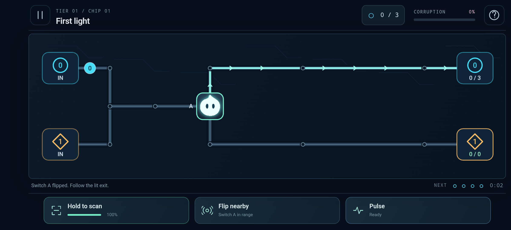

01 / Signal Map
Signal Garden
Find your rhythm. Learn the routes, match the streams, and restore the first connections.
Android + iOS · In development
Follow the traces. Outsmart the infection. Guide Spark through a sleeping system and bring its forgotten memories home.
Game help & support →01 / Signal Map
Find your rhythm. Learn the routes, match the streams, and restore the first connections.
02 / Neon Arcade
Read the traffic. Time the gates, manage the buffers, and rescue packets from hungry Leeches.
03 / Tactile Circuit
Think a step ahead. Invert values, navigate compound circuits, and wake the heart of the system.

Data Miner is being prepared for mobile testing. Store download links will appear here when available. A one-time Premium option for ad-free, offline play is planned; purchases are not available in the current test build.